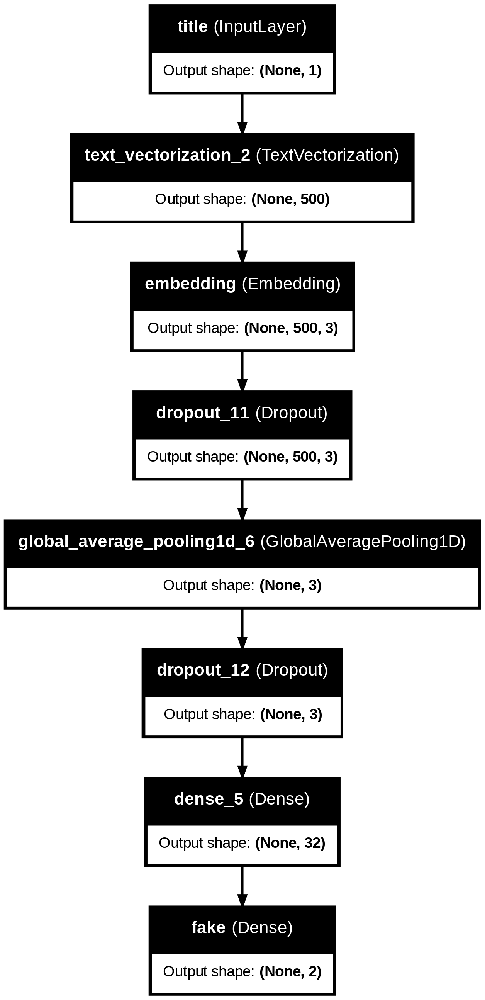

!pip install keras --upgradeFake News Classification
import os
os.environ["KERAS_BACKEND"] = "tensorflow"import numpy as np
import pandas as pd
import tensorflow as tf
import re
import string
import nltk
from nltk.corpus import stopwords
nltk.download('stopwords')
import matplotlib.pyplot as plt
from keras import layers
from keras import losses
import keras
from keras import utils
from keras.layers import TextVectorization
from sklearn.preprocessing import LabelEncoder
import tensorflow as tf
# for embedding viz
import plotly.express as px
import plotly.io as pio
pio.templates.default = "plotly_white"
#pio.renderers.default='iframe'[nltk_data] Downloading package stopwords to /root/nltk_data...
[nltk_data] Package stopwords is already up-to-date!Data Source
Our data for this assignment comes from the article - Ahmed H, Traore I, Saad S. (2017) “Detection of Online Fake News Using N-Gram Analysis and Machine Learning Techniques. In: Traore I., Woungang I., Awad A. (eds) Intelligent, Secure, and Dependable Systems in Distributed and Cloud Environments. ISDDC 2017. Lecture Notes in Computer Science, vol 10618. Springer, Cham (pp. 127-138).
1. Acquire Training Data
The dataset hosted a training data set at the below URL.
# import the training dataset
train_url = "https://github.com/PhilChodrow/PIC16b/blob/master/datasets/fake_news_train.csv?raw=true"
df = pd.read_csv(train_url)Each row of the data corresponds to an article. The title column gives the title of the article, while the text column gives the full article text. The final column, called fake, is 0 if the article is true and 1 if the article contains fake news, as determined by the authors of the paper above.
Let’s take a quick look:
# check dataframe
df.head()| Unnamed: 0 | title | text | fake | |
|---|---|---|---|---|
| 0 | 17366 | Merkel: Strong result for Austria's FPO 'big c... | German Chancellor Angela Merkel said on Monday... | 0 |
| 1 | 5634 | Trump says Pence will lead voter fraud panel | WEST PALM BEACH, Fla.President Donald Trump sa... | 0 |
| 2 | 17487 | JUST IN: SUSPECTED LEAKER and “Close Confidant... | On December 5, 2017, Circa s Sara Carter warne... | 1 |
| 3 | 12217 | Thyssenkrupp has offered help to Argentina ove... | Germany s Thyssenkrupp, has offered assistance... | 0 |
| 4 | 5535 | Trump say appeals court decision on travel ban... | President Donald Trump on Thursday called the ... | 0 |
2. Make a Dataset
Write a function called make_dataset. This function should do three things:
- Change the text to lowercase.
- Remove stopwords from the article
textandtitle. A stopword is a word that is usually considered to be uninformative, such as “the,” “and,” or “but.” - Construct and return a
tf.data.Datasetwith two inputs and one output. The input should be of the form(title, text), and the output should consist only of thefakecolumn.
Call the function make_dataset on your training dataframe to produce a tf.data.Dataset. You may wish to batch your Dataset prior to returning it, which can be done like this: my_data_set.batch(100). Batching causes your model to train on chunks of data rather than individual rows. This can sometimes reduce accuracy, but can also greatly increase the speed of training. Finding a balance is key. I found batches of 100 rows to work well.
def make_dataset(df):
"""
Prepares a TensorFlow dataset from a pandas DataFrame by processing text data.
The function converts text to lowercase, removes English stopwords, and batches
the inputs and outputs.
Parameters:
df (pandas.DataFrame): DataFrame with 'title', 'text', and 'fake' columns.
Returns:
tf.data.Dataset: A batched dataset with tuples of inputs and outputs.
"""
## Change all text to lowercase
df['text'] = df['text'].str.lower()
df['title'] = df['title'].str.lower()
## Remove stopwords
# stopwords from nltk
stop = stopwords.words('english')
pattern = r'\b(' + '|'.join(stop) + r')\b' # use regex
# remove stopwords through replacement
df['text'] = df['text'].str.replace(pattern, '', regex=True)
df['title'] = df['title'].str.replace(pattern, '', regex=True)
# Convert the DataFrame columns to Tensors
titles = tf.convert_to_tensor(df['title'].values)
texts = tf.convert_to_tensor(df['text'].values)
fake = tf.convert_to_tensor(df['fake'].values)
# Combine the titles and texts into a single input tensor
inputs = (titles, texts)
# Create a tf.data.Datasetfrom the input and output tensors
dataset = tf.data.Dataset.from_tensor_slices((inputs, fake))
# Batch the dataset
batched_dataset = dataset.batch(100)
return batched_datasetValidation Data
After you’ve constructed your primary Dataset, split of 20% of it to use for validation.
# Construct the primary Dataset
Dataset = make_dataset(df)# Determine the total number of batches in the full dataset
total_batches = len(df) // 100 # if batch_size is 100
# Calculate the number of batches to take for validation
val_batches = int(total_batches * 0.2)
# The validation dataset will be the first 20% of the dataset
val = Dataset.take(val_batches)
# The rest will be the training dataset
train = Dataset.skip(val_batches)Base Rate
The base rate refers to the accuracy of a model that always makes the same guess (for example, such a model might always say “fake news!”). Determine the base rate for this data set by examining the labels on the training set.
fake_count = df['fake'].sum() # count the number of `fake` labels
true_count = len(df) - fake_count # count the number of `true` labels
print(f"This is the number of 'fake' labels: {fake_count}")
print(f"This is the number of 'true' labels: {true_count}")This is the number of 'fake' labels: 11740
This is the number of 'true' labels: 10709# base model will always guess `fake` because it occurs more frequently
# Calculate the base accuracy:
print(f'The base accuracy for the full dataset is {fake_count / (fake_count + true_count)}')The base accuracy for the full dataset is 0.522963160942581# Unbatch the dataset
unbatched = train.unbatch()
# This mapping function now simply returns the label because it's a scalar tensor
unbatched = unbatched.map(lambda x, label: label)
# Cast to numpy iterator then to list
np_data = list(unbatched.as_numpy_iterator())
# Calculate the mean of the labels - we can do this because it's binary
mean_label = np.mean(np_data)
print(f'The training base accuracy is {mean_label}')The training base accuracy is 0.524239570059283The base accuracy is around 52%, and we see that this is true for both the full dataset and the training dataset. ### TextVectorization
#preparing a text vectorization layer for tf model
size_vocabulary = 2000
def standardization(input_data):
"""
Standardize the input text data by converting to lowercase and removing punctuation.
Args:
input_data: A Tensor of type string.
Returns:
A Tensor of the same shape as `input_data`, with text standardized.
"""
lowercase = tf.strings.lower(input_data)
# Remove specific unwanted character (right single quotation mark)
no_special_char = tf.strings.regex_replace(lowercase, u'\u2019', '')
no_punctuation = tf.strings.regex_replace(no_special_char,
'[%s]' % re.escape(string.punctuation),'')
return no_punctuation
# TextVectorize the titles and text
vectorize_layer = TextVectorization(
standardize=standardization,
max_tokens=size_vocabulary, # only consider this many words
output_mode='int',
output_sequence_length=500)
# learn abt common words in the title
vectorize_layer.adapt(train.map(lambda x, y: x[0]))
# same layer learns abt common words in the text
vectorize_layer.adapt(train.map(lambda x, y: x[1]))3. Create Models
Please use TensorFlow models to offer a perspective on the following question:
When detecting fake news, is it most effective to focus on only the title of the article, the full text of the article, or both?
First Model
In the first model, we will use only the article title as an input.
## Create the title and text inputs
title_input = keras.Input(
shape = (1,), # only a single title in each
name = 'title',
dtype = 'string'
)
text_input = keras.Input(
shape = (1,), # only a single text in each
name = 'text',
dtype = 'string'
)# use functional APIs to assemble model
title_features = vectorize_layer(title_input) # vectorize title input
title_features = layers.Embedding(size_vocabulary, output_dim = 3, name="embedding1")(title_features) # capture semantic meaning and relationship b/w words
title_features = layers.Dropout(0.2)(title_features) #Dropout for overfitting
title_features = layers.GlobalAveragePooling1D()(title_features) # spatial averaging over the entire dimension
title_features = layers.Dropout(0.2)(title_features) #Dropout for overfitting
title_features = layers.Dense(32, activation='relu')(title_features) # 32 neurons
title_output = layers.Dense(2, name = "fake")(title_features) # final binary classification# put everything into a model
model1 = keras.Model(
inputs = title_input,
outputs = title_output
)
model1.summary() # summarize modelModel: "functional_1"
┏━━━━━━━━━━━━━━━━━━━━━━━━━━━━━━━━━━━━━━┳━━━━━━━━━━━━━━━━━━━━━━━━━━━━━┳━━━━━━━━━━━━━━━━━┓ ┃ Layer (type) ┃ Output Shape ┃ Param # ┃ ┡━━━━━━━━━━━━━━━━━━━━━━━━━━━━━━━━━━━━━━╇━━━━━━━━━━━━━━━━━━━━━━━━━━━━━╇━━━━━━━━━━━━━━━━━┩ │ title (InputLayer) │ (None, 1) │ 0 │ ├──────────────────────────────────────┼─────────────────────────────┼─────────────────┤ │ text_vectorization │ (None, 500) │ 0 │ │ (TextVectorization) │ │ │ ├──────────────────────────────────────┼─────────────────────────────┼─────────────────┤ │ embedding1 (Embedding) │ (None, 500, 3) │ 6,000 │ ├──────────────────────────────────────┼─────────────────────────────┼─────────────────┤ │ dropout (Dropout) │ (None, 500, 3) │ 0 │ ├──────────────────────────────────────┼─────────────────────────────┼─────────────────┤ │ global_average_pooling1d │ (None, 3) │ 0 │ │ (GlobalAveragePooling1D) │ │ │ ├──────────────────────────────────────┼─────────────────────────────┼─────────────────┤ │ dropout_1 (Dropout) │ (None, 3) │ 0 │ ├──────────────────────────────────────┼─────────────────────────────┼─────────────────┤ │ dense (Dense) │ (None, 32) │ 128 │ ├──────────────────────────────────────┼─────────────────────────────┼─────────────────┤ │ fake (Dense) │ (None, 2) │ 66 │ └──────────────────────────────────────┴─────────────────────────────┴─────────────────┘
Total params: 6,194 (24.20 KB)
Trainable params: 6,194 (24.20 KB)
Non-trainable params: 0 (0.00 B)
# visualize model
utils.plot_model(model1, "output1_filename.png",
show_shapes=True,
show_layer_names=True)
# compile the model
model1.compile(optimizer="adam",
loss = losses.SparseCategoricalCrossentropy(from_logits=True),
metrics=["accuracy"])
# train the model
history1 = model1.fit(train.map(lambda x, y: (x[0], y)), # only take the title as input
validation_data=val.map(lambda x, y: (x[0], y)), # only take the title as input
epochs = 20)Epoch 1/20
181/181 ━━━━━━━━━━━━━━━━━━━━ 2s 6ms/step - accuracy: 0.5216 - loss: 0.6924 - val_accuracy: 0.5177 - val_loss: 0.6904
Epoch 2/20
181/181 ━━━━━━━━━━━━━━━━━━━━ 1s 5ms/step - accuracy: 0.5309 - loss: 0.6895 - val_accuracy: 0.7520 - val_loss: 0.6781
Epoch 3/20
181/181 ━━━━━━━━━━━━━━━━━━━━ 1s 5ms/step - accuracy: 0.6158 - loss: 0.6688 - val_accuracy: 0.7518 - val_loss: 0.6109
Epoch 4/20
181/181 ━━━━━━━━━━━━━━━━━━━━ 1s 5ms/step - accuracy: 0.6934 - loss: 0.5979 - val_accuracy: 0.6705 - val_loss: 0.5640
Epoch 5/20
181/181 ━━━━━━━━━━━━━━━━━━━━ 1s 5ms/step - accuracy: 0.7349 - loss: 0.5299 - val_accuracy: 0.7798 - val_loss: 0.4777
Epoch 6/20
181/181 ━━━━━━━━━━━━━━━━━━━━ 1s 5ms/step - accuracy: 0.7526 - loss: 0.5016 - val_accuracy: 0.7886 - val_loss: 0.4558
Epoch 7/20
181/181 ━━━━━━━━━━━━━━━━━━━━ 1s 5ms/step - accuracy: 0.7597 - loss: 0.4891 - val_accuracy: 0.7945 - val_loss: 0.4401
Epoch 8/20
181/181 ━━━━━━━━━━━━━━━━━━━━ 1s 5ms/step - accuracy: 0.7697 - loss: 0.4739 - val_accuracy: 0.7684 - val_loss: 0.4647
Epoch 9/20
181/181 ━━━━━━━━━━━━━━━━━━━━ 2s 9ms/step - accuracy: 0.7749 - loss: 0.4649 - val_accuracy: 0.8132 - val_loss: 0.4137
Epoch 10/20
181/181 ━━━━━━━━━━━━━━━━━━━━ 3s 9ms/step - accuracy: 0.7822 - loss: 0.4541 - val_accuracy: 0.8161 - val_loss: 0.4024
Epoch 11/20
181/181 ━━━━━━━━━━━━━━━━━━━━ 2s 8ms/step - accuracy: 0.7994 - loss: 0.4274 - val_accuracy: 0.8250 - val_loss: 0.3863
Epoch 12/20
181/181 ━━━━━━━━━━━━━━━━━━━━ 1s 5ms/step - accuracy: 0.8046 - loss: 0.4143 - val_accuracy: 0.8361 - val_loss: 0.3826
Epoch 13/20
181/181 ━━━━━━━━━━━━━━━━━━━━ 1s 5ms/step - accuracy: 0.8099 - loss: 0.4112 - val_accuracy: 0.8236 - val_loss: 0.3919
Epoch 14/20
181/181 ━━━━━━━━━━━━━━━━━━━━ 1s 6ms/step - accuracy: 0.8202 - loss: 0.3984 - val_accuracy: 0.8386 - val_loss: 0.3677
Epoch 15/20
181/181 ━━━━━━━━━━━━━━━━━━━━ 1s 5ms/step - accuracy: 0.8225 - loss: 0.3931 - val_accuracy: 0.8530 - val_loss: 0.3386
Epoch 16/20
181/181 ━━━━━━━━━━━━━━━━━━━━ 1s 5ms/step - accuracy: 0.8172 - loss: 0.3933 - val_accuracy: 0.8323 - val_loss: 0.3747
Epoch 17/20
181/181 ━━━━━━━━━━━━━━━━━━━━ 1s 6ms/step - accuracy: 0.8259 - loss: 0.3826 - val_accuracy: 0.8495 - val_loss: 0.3486
Epoch 18/20
181/181 ━━━━━━━━━━━━━━━━━━━━ 2s 9ms/step - accuracy: 0.8253 - loss: 0.3790 - val_accuracy: 0.8627 - val_loss: 0.3169
Epoch 19/20
181/181 ━━━━━━━━━━━━━━━━━━━━ 1s 6ms/step - accuracy: 0.8345 - loss: 0.3603 - val_accuracy: 0.8755 - val_loss: 0.3030
Epoch 20/20
181/181 ━━━━━━━━━━━━━━━━━━━━ 1s 5ms/step - accuracy: 0.8336 - loss: 0.3635 - val_accuracy: 0.8800 - val_loss: 0.2912The validation accuracy just based on title alone is around 87% to 88%. I added 2 Dropout layers to combat overfitting, and since the validation accuracy is slightly higher than the training accuracy, overfitting is definitely not an issue.
#plot accuracy metrics
plt.plot(history1.history["accuracy"], label = "training")
plt.plot(history1.history["val_accuracy"], label = "validation")
plt.gca().set(xlabel = "epoch", ylabel = "accuracy")
plt.legend()Second Model
In the second model, we will only use the article text as an input.
# use functional APIs
text_features = vectorize_layer(text_input) # vectorize the text
text_features = layers.Embedding(size_vocabulary, output_dim = 3, name="embedding2")(text_features) # capture semantic meaning and relationship b/w words
text_features = layers.Dropout(0.2)(text_features) #Dropout for overfitting
text_features = layers.GlobalAveragePooling1D()(text_features) # spatial averaging over the entire dimension
text_features = layers.Dropout(0.2)(text_features) #Dropout for overfitting
text_features = layers.Dense(32, activation='relu')(text_features) # 32 neurons
text_output = layers.Dense(2, name = "fake")(text_features) # final binary classification# put everything into a model
model2 = keras.Model(
inputs = text_input,
outputs = text_output
)
model2.summary() # summarize modelModel: "functional_3"
┏━━━━━━━━━━━━━━━━━━━━━━━━━━━━━━━━━━━━━━┳━━━━━━━━━━━━━━━━━━━━━━━━━━━━━┳━━━━━━━━━━━━━━━━━┓ ┃ Layer (type) ┃ Output Shape ┃ Param # ┃ ┡━━━━━━━━━━━━━━━━━━━━━━━━━━━━━━━━━━━━━━╇━━━━━━━━━━━━━━━━━━━━━━━━━━━━━╇━━━━━━━━━━━━━━━━━┩ │ text (InputLayer) │ (None, 1) │ 0 │ ├──────────────────────────────────────┼─────────────────────────────┼─────────────────┤ │ text_vectorization │ (None, 500) │ 0 │ │ (TextVectorization) │ │ │ ├──────────────────────────────────────┼─────────────────────────────┼─────────────────┤ │ embedding2 (Embedding) │ (None, 500, 3) │ 6,000 │ ├──────────────────────────────────────┼─────────────────────────────┼─────────────────┤ │ dropout_2 (Dropout) │ (None, 500, 3) │ 0 │ ├──────────────────────────────────────┼─────────────────────────────┼─────────────────┤ │ global_average_pooling1d_1 │ (None, 3) │ 0 │ │ (GlobalAveragePooling1D) │ │ │ ├──────────────────────────────────────┼─────────────────────────────┼─────────────────┤ │ dropout_3 (Dropout) │ (None, 3) │ 0 │ ├──────────────────────────────────────┼─────────────────────────────┼─────────────────┤ │ dense_1 (Dense) │ (None, 32) │ 128 │ ├──────────────────────────────────────┼─────────────────────────────┼─────────────────┤ │ fake (Dense) │ (None, 2) │ 66 │ └──────────────────────────────────────┴─────────────────────────────┴─────────────────┘
Total params: 6,194 (24.20 KB)
Trainable params: 6,194 (24.20 KB)
Non-trainable params: 0 (0.00 B)
# visualize model
utils.plot_model(model2, "output2_filename.png",
show_shapes=True,
show_layer_names=True)# compile the model
model2.compile(optimizer="adam",
loss = losses.SparseCategoricalCrossentropy(from_logits=True),
metrics=["accuracy"])
# train the model
history2 = model2.fit(train.map(lambda x, y: (x[1], y)), # only take the text as input
validation_data=val.map(lambda x, y: (x[1], y)), # only take the text as input
epochs = 20)Epoch 1/20
181/181 ━━━━━━━━━━━━━━━━━━━━ 3s 12ms/step - accuracy: 0.5440 - loss: 0.6858 - val_accuracy: 0.9286 - val_loss: 0.5790
Epoch 2/20
181/181 ━━━━━━━━━━━━━━━━━━━━ 2s 11ms/step - accuracy: 0.8603 - loss: 0.4902 - val_accuracy: 0.9407 - val_loss: 0.2658
Epoch 3/20
181/181 ━━━━━━━━━━━━━━━━━━━━ 3s 13ms/step - accuracy: 0.9278 - loss: 0.2552 - val_accuracy: 0.9480 - val_loss: 0.1943
Epoch 4/20
181/181 ━━━━━━━━━━━━━━━━━━━━ 3s 14ms/step - accuracy: 0.9340 - loss: 0.1987 - val_accuracy: 0.9532 - val_loss: 0.1696
Epoch 5/20
181/181 ━━━━━━━━━━━━━━━━━━━━ 3s 15ms/step - accuracy: 0.9405 - loss: 0.1736 - val_accuracy: 0.9523 - val_loss: 0.1566
Epoch 6/20
181/181 ━━━━━━━━━━━━━━━━━━━━ 3s 17ms/step - accuracy: 0.9472 - loss: 0.1615 - val_accuracy: 0.9570 - val_loss: 0.1464
Epoch 7/20
181/181 ━━━━━━━━━━━━━━━━━━━━ 5s 26ms/step - accuracy: 0.9514 - loss: 0.1481 - val_accuracy: 0.9600 - val_loss: 0.1398
Epoch 8/20
181/181 ━━━━━━━━━━━━━━━━━━━━ 3s 17ms/step - accuracy: 0.9519 - loss: 0.1407 - val_accuracy: 0.9614 - val_loss: 0.1351
Epoch 9/20
181/181 ━━━━━━━━━━━━━━━━━━━━ 6s 23ms/step - accuracy: 0.9512 - loss: 0.1372 - val_accuracy: 0.9611 - val_loss: 0.1316
Epoch 10/20
181/181 ━━━━━━━━━━━━━━━━━━━━ 6s 30ms/step - accuracy: 0.9531 - loss: 0.1372 - val_accuracy: 0.9618 - val_loss: 0.1290
Epoch 11/20
181/181 ━━━━━━━━━━━━━━━━━━━━ 7s 11ms/step - accuracy: 0.9609 - loss: 0.1245 - val_accuracy: 0.9548 - val_loss: 0.1339
Epoch 12/20
181/181 ━━━━━━━━━━━━━━━━━━━━ 3s 15ms/step - accuracy: 0.9596 - loss: 0.1220 - val_accuracy: 0.9586 - val_loss: 0.1279
Epoch 13/20
181/181 ━━━━━━━━━━━━━━━━━━━━ 4s 11ms/step - accuracy: 0.9606 - loss: 0.1219 - val_accuracy: 0.9648 - val_loss: 0.1225
Epoch 14/20
181/181 ━━━━━━━━━━━━━━━━━━━━ 2s 11ms/step - accuracy: 0.9618 - loss: 0.1154 - val_accuracy: 0.9650 - val_loss: 0.1187
Epoch 15/20
181/181 ━━━━━━━━━━━━━━━━━━━━ 2s 11ms/step - accuracy: 0.9648 - loss: 0.1095 - val_accuracy: 0.9670 - val_loss: 0.1178
Epoch 16/20
181/181 ━━━━━━━━━━━━━━━━━━━━ 2s 12ms/step - accuracy: 0.9606 - loss: 0.1109 - val_accuracy: 0.9643 - val_loss: 0.1185
Epoch 17/20
181/181 ━━━━━━━━━━━━━━━━━━━━ 3s 14ms/step - accuracy: 0.9592 - loss: 0.1125 - val_accuracy: 0.9648 - val_loss: 0.1176
Epoch 18/20
181/181 ━━━━━━━━━━━━━━━━━━━━ 2s 11ms/step - accuracy: 0.9647 - loss: 0.1024 - val_accuracy: 0.9636 - val_loss: 0.1171
Epoch 19/20
181/181 ━━━━━━━━━━━━━━━━━━━━ 3s 11ms/step - accuracy: 0.9655 - loss: 0.1020 - val_accuracy: 0.9652 - val_loss: 0.1146
Epoch 20/20
181/181 ━━━━━━━━━━━━━━━━━━━━ 2s 11ms/step - accuracy: 0.9642 - loss: 0.1027 - val_accuracy: 0.9686 - val_loss: 0.1121The validation accuracy just based on text alone is above 96%. Once again, overfitting is not an issue.
#plot accuracy metrics
plt.plot(history2.history["accuracy"], label = "training")
plt.plot(history2.history["val_accuracy"], label = "validation")
plt.gca().set(xlabel = "epoch", ylabel = "accuracy")
plt.legend()Third Model
In the third model, We will use both the article title and the article text as input.
# combine both text and title and will require us to concatenate our prior two pipelines:
both = layers.concatenate([title_features, text_features], axis=1)
# add another final dense layer
both = layers.Dense(32, activation='relu')(both)
both_output = layers.Dense(2, name="fake")(both)model3 = keras.Model(
inputs = [title_input, text_input],
outputs = both_output
)
model3.summary()Model: "functional_5"
┏━━━━━━━━━━━━━━━━━━━━━━━━━━━┳━━━━━━━━━━━━━━━━━━━━━━━━┳━━━━━━━━━━━━━━━━┳━━━━━━━━━━━━━━━━━━━━━━━━┓ ┃ Layer (type) ┃ Output Shape ┃ Param # ┃ Connected to ┃ ┡━━━━━━━━━━━━━━━━━━━━━━━━━━━╇━━━━━━━━━━━━━━━━━━━━━━━━╇━━━━━━━━━━━━━━━━╇━━━━━━━━━━━━━━━━━━━━━━━━┩ │ title (InputLayer) │ (None, 1) │ 0 │ - │ ├───────────────────────────┼────────────────────────┼────────────────┼────────────────────────┤ │ text (InputLayer) │ (None, 1) │ 0 │ - │ ├───────────────────────────┼────────────────────────┼────────────────┼────────────────────────┤ │ text_vectorization │ (None, 500) │ 0 │ title[0][0], │ │ (TextVectorization) │ │ │ text[0][0] │ ├───────────────────────────┼────────────────────────┼────────────────┼────────────────────────┤ │ embedding1 (Embedding) │ (None, 500, 3) │ 6,000 │ text_vectorization[0]… │ ├───────────────────────────┼────────────────────────┼────────────────┼────────────────────────┤ │ embedding2 (Embedding) │ (None, 500, 3) │ 6,000 │ text_vectorization[1]… │ ├───────────────────────────┼────────────────────────┼────────────────┼────────────────────────┤ │ dropout (Dropout) │ (None, 500, 3) │ 0 │ embedding1[0][0] │ ├───────────────────────────┼────────────────────────┼────────────────┼────────────────────────┤ │ dropout_2 (Dropout) │ (None, 500, 3) │ 0 │ embedding2[0][0] │ ├───────────────────────────┼────────────────────────┼────────────────┼────────────────────────┤ │ global_average_pooling1d │ (None, 3) │ 0 │ dropout[0][0] │ │ (GlobalAveragePooling1D) │ │ │ │ ├───────────────────────────┼────────────────────────┼────────────────┼────────────────────────┤ │ global_average_pooling1d… │ (None, 3) │ 0 │ dropout_2[0][0] │ │ (GlobalAveragePooling1D) │ │ │ │ ├───────────────────────────┼────────────────────────┼────────────────┼────────────────────────┤ │ dropout_1 (Dropout) │ (None, 3) │ 0 │ global_average_poolin… │ ├───────────────────────────┼────────────────────────┼────────────────┼────────────────────────┤ │ dropout_3 (Dropout) │ (None, 3) │ 0 │ global_average_poolin… │ ├───────────────────────────┼────────────────────────┼────────────────┼────────────────────────┤ │ dense (Dense) │ (None, 32) │ 128 │ dropout_1[0][0] │ ├───────────────────────────┼────────────────────────┼────────────────┼────────────────────────┤ │ dense_1 (Dense) │ (None, 32) │ 128 │ dropout_3[0][0] │ ├───────────────────────────┼────────────────────────┼────────────────┼────────────────────────┤ │ concatenate (Concatenate) │ (None, 64) │ 0 │ dense[0][0], │ │ │ │ │ dense_1[0][0] │ ├───────────────────────────┼────────────────────────┼────────────────┼────────────────────────┤ │ dense_2 (Dense) │ (None, 32) │ 2,080 │ concatenate[0][0] │ ├───────────────────────────┼────────────────────────┼────────────────┼────────────────────────┤ │ fake (Dense) │ (None, 2) │ 66 │ dense_2[0][0] │ └───────────────────────────┴────────────────────────┴────────────────┴────────────────────────┘
Total params: 14,402 (56.26 KB)
Trainable params: 14,402 (56.26 KB)
Non-trainable params: 0 (0.00 B)
# visualize model
utils.plot_model(model3, "output3_filename.png",
show_shapes=True,
show_layer_names=True)# compile the model
model3.compile(optimizer="adam",
loss = losses.SparseCategoricalCrossentropy(from_logits=True),
metrics=["accuracy"])
# train the model
history3 = model3.fit(train, # only take the text as input
validation_data=val, # only take the text as input
epochs = 20)Epoch 1/20
181/181 ━━━━━━━━━━━━━━━━━━━━ 6s 15ms/step - accuracy: 0.9669 - loss: 0.0916 - val_accuracy: 0.9725 - val_loss: 0.0978
Epoch 2/20
181/181 ━━━━━━━━━━━━━━━━━━━━ 5s 14ms/step - accuracy: 0.9713 - loss: 0.0804 - val_accuracy: 0.9743 - val_loss: 0.0912
Epoch 3/20
181/181 ━━━━━━━━━━━━━━━━━━━━ 3s 18ms/step - accuracy: 0.9742 - loss: 0.0780 - val_accuracy: 0.9739 - val_loss: 0.0885
Epoch 4/20
181/181 ━━━━━━━━━━━━━━━━━━━━ 4s 14ms/step - accuracy: 0.9716 - loss: 0.0799 - val_accuracy: 0.9723 - val_loss: 0.0895
Epoch 5/20
181/181 ━━━━━━━━━━━━━━━━━━━━ 2s 13ms/step - accuracy: 0.9674 - loss: 0.0908 - val_accuracy: 0.9757 - val_loss: 0.0884
Epoch 6/20
181/181 ━━━━━━━━━━━━━━━━━━━━ 2s 14ms/step - accuracy: 0.9773 - loss: 0.0658 - val_accuracy: 0.9730 - val_loss: 0.0907
Epoch 7/20
181/181 ━━━━━━━━━━━━━━━━━━━━ 3s 19ms/step - accuracy: 0.9732 - loss: 0.0744 - val_accuracy: 0.9764 - val_loss: 0.0825
Epoch 8/20
181/181 ━━━━━━━━━━━━━━━━━━━━ 4s 13ms/step - accuracy: 0.9709 - loss: 0.0792 - val_accuracy: 0.9720 - val_loss: 0.0895
Epoch 9/20
181/181 ━━━━━━━━━━━━━━━━━━━━ 2s 14ms/step - accuracy: 0.9744 - loss: 0.0705 - val_accuracy: 0.9725 - val_loss: 0.0960
Epoch 10/20
181/181 ━━━━━━━━━━━━━━━━━━━━ 3s 14ms/step - accuracy: 0.9664 - loss: 0.0913 - val_accuracy: 0.9755 - val_loss: 0.0893
Epoch 11/20
181/181 ━━━━━━━━━━━━━━━━━━━━ 5s 13ms/step - accuracy: 0.9801 - loss: 0.0604 - val_accuracy: 0.9634 - val_loss: 0.1090
Epoch 12/20
181/181 ━━━━━━━━━━━━━━━━━━━━ 3s 14ms/step - accuracy: 0.9723 - loss: 0.0810 - val_accuracy: 0.9770 - val_loss: 0.0806
Epoch 13/20
181/181 ━━━━━━━━━━━━━━━━━━━━ 2s 13ms/step - accuracy: 0.9794 - loss: 0.0623 - val_accuracy: 0.9768 - val_loss: 0.0853
Epoch 14/20
181/181 ━━━━━━━━━━━━━━━━━━━━ 3s 18ms/step - accuracy: 0.9781 - loss: 0.0624 - val_accuracy: 0.9739 - val_loss: 0.0924
Epoch 15/20
181/181 ━━━━━━━━━━━━━━━━━━━━ 4s 14ms/step - accuracy: 0.9719 - loss: 0.0775 - val_accuracy: 0.9750 - val_loss: 0.0848
Epoch 16/20
181/181 ━━━━━━━━━━━━━━━━━━━━ 3s 14ms/step - accuracy: 0.9765 - loss: 0.0639 - val_accuracy: 0.9766 - val_loss: 0.0853
Epoch 17/20
181/181 ━━━━━━━━━━━━━━━━━━━━ 3s 14ms/step - accuracy: 0.9720 - loss: 0.0778 - val_accuracy: 0.9752 - val_loss: 0.0879
Epoch 18/20
181/181 ━━━━━━━━━━━━━━━━━━━━ 4s 21ms/step - accuracy: 0.9767 - loss: 0.0640 - val_accuracy: 0.9745 - val_loss: 0.0875
Epoch 19/20
181/181 ━━━━━━━━━━━━━━━━━━━━ 4s 20ms/step - accuracy: 0.9820 - loss: 0.0542 - val_accuracy: 0.9734 - val_loss: 0.0915
Epoch 20/20
181/181 ━━━━━━━━━━━━━━━━━━━━ 6s 25ms/step - accuracy: 0.9772 - loss: 0.0636 - val_accuracy: 0.9734 - val_loss: 0.0913The validation accuracy just based on both title and text is above 97%. Once again, overfitting is not an issue.
#plot accuracy metrics
plt.plot(history2.history["accuracy"], label = "training")
plt.plot(history2.history["val_accuracy"], label = "validation")
plt.gca().set(xlabel = "epoch", ylabel = "accuracy")
plt.legend()
Overall, the third model using both title and text performed the best at around/above 97%. The second model was not far off behind at around/above 96%, while the first model performed the worst, stabilizing between 87% and 88%. Therefore, ideally, we would use both the title and text for the algorithm.
4. Model Evaluation
# download test data
test_url = "https://github.com/PhilChodrow/PIC16b/blob/master/datasets/fake_news_test.csv?raw=true"
test_df = pd.read_csv(test_url)
test_df| Unnamed: 0 | title | text | fake | |
|---|---|---|---|---|
| 0 | 420 | CNN And MSNBC Destroy Trump, Black Out His Fa... | Donald Trump practically does something to cri... | 1 |
| 1 | 14902 | Exclusive: Kremlin tells companies to deliver ... | The Kremlin wants good news. The Russian lead... | 0 |
| 2 | 322 | Golden State Warriors Coach Just WRECKED Trum... | On Saturday, the man we re forced to call Pre... | 1 |
| 3 | 16108 | Putin opens monument to Stalin's victims, diss... | President Vladimir Putin inaugurated a monumen... | 0 |
| 4 | 10304 | BREAKING: DNC HACKER FIRED For Bank Fraud…Blam... | Apparently breaking the law and scamming the g... | 1 |
| ... | ... | ... | ... | ... |
| 22444 | 20058 | U.S. will stand be steadfast ally to Britain a... | The United States will stand by Britain as it ... | 0 |
| 22445 | 21104 | Trump rebukes South Korea after North Korean b... | U.S. President Donald Trump admonished South K... | 0 |
| 22446 | 2842 | New rule requires U.S. banks to allow consumer... | U.S. banks and credit card companies could be ... | 0 |
| 22447 | 22298 | US Middle Class Still Suffering from Rockefell... | Dick Eastman The Truth HoundWhen Henry Kissin... | 1 |
| 22448 | 333 | Scaramucci TV Appearance Goes Off The Rails A... | The most infamous characters from Donald Trump... | 1 |
22449 rows × 4 columns
# preprocess the test data
test_ds = make_dataset(test_df)# test it
model3.evaluate(test_ds)225/225 ━━━━━━━━━━━━━━━━━━━━ 3s 14ms/step - accuracy: 0.9731 - loss: 0.0887[0.08659978955984116, 0.973985493183136]The accuracy is slightly above 97%, which is what we are aiming for!
4. Embedding Visualizations
# Retrieve the weights from the first embedding layer (for the title)
weights_1 = model3.get_layer('embedding1').get_weights()[0]
# Retrieve the weights from the second embedding layer (for the text)
weights_2 = model3.get_layer('embedding2').get_weights()[0]
# Retrieve the shared vocabulary from the vectorization layer
vocab = vectorize_layer.get_vocabulary()from sklearn.decomposition import PCA
# Combine the weights from both embedding layers if necessary
# Perform PCA to reduce to 2 components
pca_1 = PCA(n_components=2)
weights_1 = pca_1.fit_transform(weights_1)
pca_2 = PCA(n_components=2)
weights_2 = pca_2.fit_transform(weights_2)# Make a dataframe from our results
embedding1_df = pd.DataFrame({
'word' : vocab,
'x0' : weights_1[:,0],
'x1' : weights_1[:,1]
})
embedding2_df = pd.DataFrame({
'word' : vocab,
'x0' : weights_2[:,0],
'x1' : weights_2[:,1]
})
# Combine the dataframes for title and text
embedding_df = pd.concat([embedding1_df, embedding2_df])# Plot the embedding
fig = px.scatter(embedding_df,
x = "x0",
y = "x1",
size = list(np.ones(len(embedding_df))),
size_max = 10,
hover_name = "word")
fig.write_html('embedding.html') # write it to html so we can show it even after downloading from colab
fig.show()from IPython.display import IFrame
# Display the html we produced from the above cell
IFrame(src='embedding.html', width=650*1.5, height=385*1.5)- ‘trump’ is located very closely with words such as ‘racist’, ‘conservative’, and ‘sanders’, which makes sense because Donald Trump’s biggest competitor was Bernie Sanders when he was running for president, Trump is in the Republican party, and has been often accused of racism.
- ‘leftist’ is found next to ‘joe’ and ‘barack’, which makes sense because Joe Biden and Barack Obama are both part of the Democratic party, making them leftists.
- ‘ergodan’ is near ‘missiles’ which also makes sense because the president of Turkey, Recep Tayyip Erdoğan, threatened Greece saying that Turkish missles can hit Athens at the end of 2022.
- ‘taiwan’ is near ‘tensions’, ‘air’, and ‘sea’ which makes sense because of the China-Taiwan dispute, resulting in political threats and air/sea-raid threats from China to Taiwan.
- ‘putin’ and ‘iran’ are located closely together which makes sense because Vladimir Putin pursued close friendship with Iran and deepened Russian military cooperation with Iran and Syria as soon as he became the president.